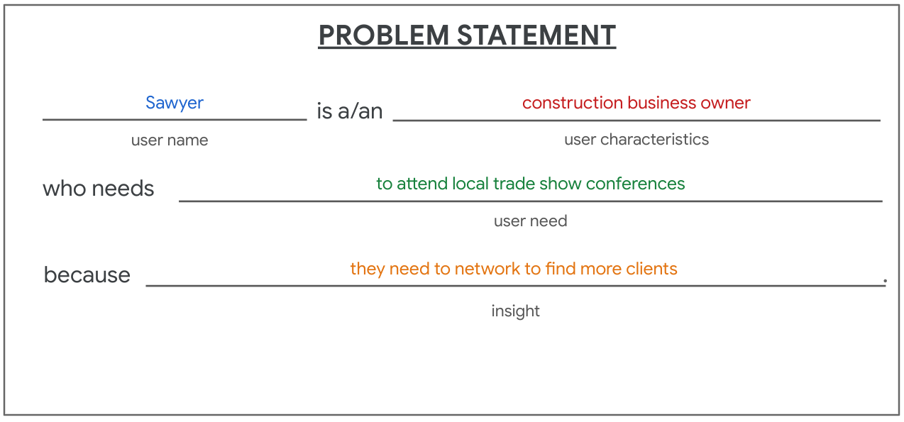

Build Wireframes and Low-Fidelity Prototypes
Thinking of ideas for your product design isn’t a random or mysterious process! The designs you create will be supported by research, feedback from user interviews, and learnings from observations. All designers have assumptions about users and what they think is important or challenging for those users. Often, these assumptions are based on the designer’s own needs and experiences. But, to come up with ideas for designs that meet users’ specific needs, your designs must be based on insights from actual user research, not assumptions.
Earlier in the course, you used four tools - empathy maps, personas, user stories, and user journey maps - to help gain a deeper understanding of users’ needs.
- Empathy maps explore users’ four main motivations: what the user says, thinks, does, and feels. The insights gathered from empathy maps help you come up with ideas for solutions that address the user’s real problems.
- Personas place the users who you’re designing for front-and-center. By creating detailed user profiles, you can clearly envision potential users that you’d design for.
- User stories determine which user needs are the most critical to address with your designs. This direction will help focus your ideation.
- User journeys help you come up with ideas for designs that truly support the users’ needs and solve their problems
Problem statement is a clear description of the user’s need that should be addressed. The problem statement you created in the last course will guide the focus of your ideation.
Learn more about goal statements
A goal statement is one or two sentences that describe a product and its benefits for the user. In other words, the goal statement provides the ideal solution for your design challenge. Goal statements cover who the product will serve, what the product will do, and why the product solves the user’s need.
A strong goal statement:
- Describes a specific action users can take or what the product will do.
- Defines who the action will affect.
- States the positive impact of the action or why the product solves the user's need.
- Outlines success in measurable terms.
Using this template, we can quickly write a goal statement that addresses the user problem identified in the problem statement above:

Outline a user flow
As a UX designer, you can anticipate user needs when interacting with your product. A clear and simple way to outline this process is by creating a user flow. A user flow is the path taken by a typical user on an app or a website, so they can complete a task from start to finish.
UX designers often outline the user flow before they start to design because it can help to picture how users will move through the app or website. In other words, before you design screens of an app, you need to understand how users can effectively move through the app overall. You need to determine:
- What actions will users take in the app?
- What decisions will users make?
- What screens will users experience after taking action or making a decision?
UX designers often outline user flows with common shapes: circles, rectangles, diamonds, and lines with arrows. Each shape represents an interaction the user will have with the product you're designing. Assigning a different shape to each interaction makes the user flow clear to anyone on the team involved in creating the product.

- Action: The actions users take when moving through a product design are represented as circles. In other words, circles show steps that must be taken to complete a task from start to finish. For the user flow of a dog walker app, actions might include opening the app, clicking on a dog walker’s profile, and booking a dog walker.
- Screen: The screens of a digital product that users will experience while completing tasks are represented as rectangles. For the user flow of a dog walker app, screens might include a homepage or a booking confirmation page.
- Decision: Diamonds represent points in the user flow where users must ask a question and make a decision. The decision users make will either move them forward through the flow or back to an earlier part of the flow. For the user flow of a dog walker app, a decision could be choosing whether or not to book the dog walker whose profile is being reviewed.
- User flow direction: Lines with arrows tie everything together and display the flow of information. Solid lines indicate forward direction through the user flow, and the dotted lines indicate backward direction or returning to a previous page.
Example of a user flow :
Keep in mind that the user flow could change based on the needs of users and their circumstances. If your problem statement changes, the user flow will probably need to change too. For example, imagine you learn that users of the dog walker app want tips on hiring dog walkers before booking an appointment. The user flow would change by allowing an option to break away from this planned user flow to visit a new screen within the app, as shown below. This screen might branch off of the "read tips" action to provide extra information on booking a new walker. You don’t need to come up with a new user flow for every possible circumstance in the product, but you should ensure that the user flow you create focuses on the needs that the majority of users will face.

Storyboards
In UX design, a storyboard is a series of panels or frames that visually describes and explores a user’s experience with a product. Telling a story through visuals is often more effective than using words.
A real product might have many screens, but your storyboard should focus on just the most important parts of a user’s experience with a product. As their name suggests, there’s a story that should be told through the panels of a storyboard. The four key elements of a storyboard are:
- Character: States the user in the storyboard.
- Scene: Gives designers a way to imagine the user’s environment.
- Plot: Describes the solution or benefit offered by the design.
- Narrative: Describes the problem the user is facing and how the design will solve this problem.
There are two common types of storyboards in UX design, both of which incorporate these four key elements:
- Big-picture storyboards focus on what the user needs, their context, and why the product will be useful to the user. Big-picture storyboards are often used early in the design process when designers are trying to get stakeholders to support their ideas.
- Close-up storyboards concentrate on the product and how it works. They’re best used in the middle to the end of the design process.
Create a big-picture storyboard
- Start with a problem statement.
- Create a goal statement
- Set up the storyboard
- Add the storyboard scenario
- Draw one idea per panel
- Expose pain points for the user along their journey.
- Include the user goal or conclusion in the final panel
Remember that big-picture storyboards focus on the user experience. The storyboard should show how people use your product and why your product will be helpful to them. Because big-picture storyboards are about the user, it's important to include emotion by using a sad or happy face, for example, at different steps of the journey to make the storyboard feel human and relatable.
Create a close-up storyboard
To create a close-up storyboard, steps 1-4 are the same as the big-picture storyboard process:
- Start with a problem statement.
- Create a goal statement.
- Set up the storyboard.
- Add the storyboard scenario.
- Draw one idea per panel. Big-picture storyboards and close-up storyboards differ in step five, when you draw each panel. Remember, big-picture storyboards focus on the user, while close-up storyboards focus on the product. For this close-up storyboard, think about which product details you want to draw attention to on each panel and why. You want to demonstrate the user flow within the product and how each action within the product will lead to the next screen.
What type of storyboard focuses on the user experience?
A big picture storyboard focuses on the user experience, and considers questions like: How will the user use our dog walking app? Why will the app be useful? And why will the user be delighted by the app?
Practice creating storyboards for the CoffeeHouse project
Anika is a busy marketing intern who needs a faster, more collaborative way to take many coffee orders at once because taking individual orders takes too long.
Big picture storyboard: Notice that this big picture storyboard is focused on the how and the why behind the user’s engagement with your design. When creating a big picture storyboard, think about questions like:
- Why does the user need our app?
- How will the user use our CoffeeHouse app?
- Why will the user be delighted by the app?
Like a good movie, a big picture storyboard can show the emotional engagement that a user will have with this app or with any product. Understanding how a user feels while experiencing your product is an essential part of the design process. A big picture storyboard should meet the following guidelines:
- Sketches should focus on the user.
- Sketches should indicate the environment or context where the user is located.
- Sketches should focus on the specific need or pain point experienced by the user.
Close-up storyboard: While big picture storyboards focus on the how and the why, close-up storyboards focus on the what. Think about questions like:
- What happens on each screen of the product?
- What does the user do to transition from one screen to another?
- What are some assumptions we are making about this experience?
- What are some potentially complicated interactions or pain points that will need to be addressed?
The close-up storyboard is less about emotion since we’re not focused on the user. Instead, the close-up storyboard is focused on the practical aspects of the design itself. A close-up storyboard should meet the following guidelines:
- Sketches should focus on the product instead of on the user experiencing that product.
- Sketches should indicate the interaction that a user may have with the product by depicting sample screens.
- Sketches should indicate any transitions between screens or states that the user may need to perform.
Low-fidelity, high-fidelity, wireframes
Low-fidelityuse when we want to get ideas out quickly and leave room for exploration.
High fidelitymeans it closely matches the look-and-feel of the final product and is more refined or polished overall. We call high-fidelity designs hi-fi for short. UX designers use high-fidelity designs when we want to test a design that looks like a real product and get more specific feedback from users.
You can think of fidelity like a dial you can turn up or down. For example, imagine you want to quickly draw the rooms of an apartment on a piece of paper with pencil. You might use simple rectangles and squares to indicate where the rooms are and where the furniture is positioned in each room. That would be a low-fidelity design. Or you can dial it up and make a detailed drawing of the apartment, including paint colors and images of pieces of furniture. Your design is now high fidelity because it looks more like the real apartment.
Wireframes - one kind of low-fidelity design
A wireframe is a basic outline of a digital experience, like an app or a website.
As the name suggests, wireframes look like they were created with wires. They're mostly lines and shapes with some text. So why do UX designers create wireframes? Wireframes establish the basic structure of a page. Wireframes serve as an outline to get the team on the same page early in the project. Try using this as your guiding question when creating wireframes:
- How do I organize information on the page in a way that makes sense for users?
- Second, wireframes highlight the intended function of the product. When drawing the wireframe, you should think about how the elements serve the overall functionality. For example, the function of a button should be clear, and that functionality is expressed through the way that it's drawn.
- Finally, wireframes help designers save time and resources. Wireframes allow the team to quickly try out different design options.
Benefits of wireframes
- wireframes inform the elements to include in your design. Seeing the elements laid out on a page will help everyone decide if the right elements are included,
- wireframes help you catch problems early. Wireframes allow you to map out how all the elements will look on each page and how users will navigate from page to age. This lets you check if elements are missing, out of order, or disorganized,
- wireframes get stakeholders to focus on structure instead of the details like color and text. The magic of a wireframe is its simplicity
- wireframe is a basic outline made up of lines and simple shapes, so there are no details for stakeholders to get hung up on. This allows you to make decisions early on the structure of the website or app
- wireframes allow you to save time and effort. The wireframe serves as a guide for everyone involved in the project. Engineers and other stakeholders agree to follow the guide early, so fewer revisions are needed. Knowing how the design will be built saves time and effort for everyone
- wireframes allow you to iterate quickly. When you design, you always need options. Overall, wireframes let us explore a greater number of design ideas and make it easy to create new designs faster
Information architecture
As a UX designer, the information that your design presents needs to be clearly organized and sorted, so users can successfully experience and interact with the app or website. This process of organizing information is called information architecture. Think of information architecture as a map for your product.
Information architecture is made up of three pieces:
- Organization: The organization is how different pieces of information connect in a product.
- Hierarchy: The hierarchy is often called the “tree structure” and is where a larger category is placed at the top and specific categories related to the overall category are placed underneath. Peer information is placed side by side (or on the same level as each other).
- Sequence: The sequence enables users to move through an app via certain orders or steps.
Eight basic principles
In your role as a UX designer, you should be familiar with the eight basic principles of information architecture. These are principles created by the founder of EightShapes, Dan Brown. They were created to help UX designers understand and make decisions about their products. Here’s a list of the eight principles:
- Object principle: You should view your content as “living” and as something that changes and grows over time.
- Choice principle: People think they want to have many choices, but they actually need fewer choices that are well-organized.
- Disclosure principle: Information should not be unexpected or unnecessary.
- Exemplar principle: Humans put things into categories and group different concepts together.
- Front door principle: People will usually arrive at a homepage from another website.
- Multiple classification principle: People have different ways of searching for information.
- Focused navigation principle: There must be a strategy and logic behind the way navigation menus are designed.
- Growth principle: The amount of content in a design will grow over time.
Site map
Sitemap is a diagram of a website or an app that shows how pages are prioritized, linked, and labeled. Sitemaps are a great way to review all of the pages you'll need to design for your website. Building an effective sitemap also allows you to identify unnecessary pages or spot gaps where you need to create a new page. So how do you create a sitemap for your responsive website? There are six steps.
What are some benefits of using information architecture (IA) to generate a sitemap?
- IA helps stakeholders review designs and evaluate content type and placement. Stakeholders can use information architecture to determine if the content would help meet business and user goals. It also helps to organize and define overall structure for an app or site, and helps engineers understand how to organize the data during development.
- IA helps engineers understand how to organize the data. Information architecture organizes and defines the overall structure for an app or site. It makes engineers’ jobs easier because they can match the development of a product to its visual design. It also helps stakeholders to review designs and evaluate content type and placement.
- IA organizes and defines the overall structure for the app or site. Strong information architecture establishes clearer wireframes leading to a well thought-out product, which can help engineers better understand how to organize the data during development. It also helps stakeholders to review designs and evaluate content type and placement
Web app sitemaps
Here’s how a sitemap is organized for a web app:
- Homepage, homescreen, or starting point: The homepage is usually the first point of entry for a user. For example, the first entry point for an app might be the welcome page. The “parent” for this page would be “welcome page.” The “child” connection might be: new user log-in, returning user log-in, or log in with Facebook or Google (these are peers and sit on the same level).
- Other relevant screens: Other relevant pages would include all the other parent/child relationships in the app. An example of this is when a user goes to the parent screen to Settings; under that, the child connections might be Profile, Security, Help, and Policies. Another example is when a user goes to the parent screen to tap Help on an app; under Help, the child connections might be Search for a help topic, Browse topics, and Contact us.
Mobile app sitemaps
This structure is similar for a mobile app; you should include high-level entry points for users. Keep in mind that you won’t use as many categories on a sitemap for a mobile app as a sitemap for a web app. Here are a few common high-level categories that might be included in an app:
- Homepage, Product Features, User Settings, Pricing, Contact Us, and Help (You can also reference this article from Medium.com to get a more detailed overview of how to build a web app sitemap ).
- Underneath those high-level categories are child connections. For example, Name, Email Address, and Payment Details would be included under User Profile.

Remember, it’s important to know the purpose of your app and the users who will benefit from it; then you can better decide the structure. This will help guide the process of creating your sitemap.
Because mobile screens are generally smaller, the challenges that come with creating information architecture for a mobile app are to 1) consider ways to focus on the essential content and eliminate or move around less important content, 2) consider the size and spacing of any touchscreen targets, and 3) consider ways to make sure the mobile text will be large enough. Good information architecture is one of the first steps in setting up a design layout that encourages the easiest paths for users to navigate through the content, so be sure to keep these points in mind as you continue to build mobile apps.
Now you have a better understanding about how information is structured in apps. Take these principles and apply them as you begin your own product designs. Take a look at this article to learn about the six key patterns that are frequently used to think through information architecture in mobile apps.
Also check out these articles on Accessibility: Guidelines for Information Architecture, UX Design, and Visual Design and World IA Day 2019 — accessibility tips for Information Architects to get a better understanding of how to think about accessibility in information architecture.
Then, read through a few key psychological principles that will help you figure out how to organize information. Finally, review the articles under Additional Resources below to learn even more about information architecture in UX.
Paper wireframe
Benefits of paper wireframe:
- fast
- cheap
- let you explore a lot of ideas
- narrow your focus
Here is a completed exemplar of paper wireframing, based on the Zia’s Pizza shop scenario that was introduced in earlier activities. Remember, the criteria for good wireframes are that they:
- Clearly define the elements intended for the page
- Include multiple versions that arrange elements in different ways
- Provide you with distinct examples you can compare and test

Digital wireframe
Gestalt Principles in wireframes
There is a belief among some people that, like a piece of art, the design of an app or website is subjective and open to a user’s personal interpretations, thoughts, or feelings. Although a user’s reaction to a design might be subjective, the design itself isn’t. Your designs will give users solid solutions to problems they experience. Think about what the user wants to do when they visit your app or website. What is their goal? How will you meet that need with your design? How will the user react?
The human brain makes sense of the world around it by building logic, patterns, and structure. Gestalt Principles describe how humans group similar elements, recognize patterns, and simplify complex images when we perceive objects. These principles guide how humans view the designs around them in everyday life. In the wireframes you’re creating, you can apply Gestalt Principles to organize content so it is visually pleasing and easier to understand. In the video, you learned about three of the Gestalt Principles: similarity, proximity, and common region.
- Similarity means that elements that look alike (in shape, size, or color, for instance) are perceived to have the same function To help users navigate your app quickly, you want to keep “like with like” for consistency. For example, if you’re including avatars or images of users in the design of your app, you’ll want to make sure that the placeholders for those avatars are the same shape and size in your wireframes. This similarly indicates to users that the elements have the same function — in this case, linking to profiles of users.
- Proximity means that elements that are close together appear to be more related than things that are spaced farther apart.Next, imagine you draw a button labeled “learn more” close to the text of an article. If a user presses the button, they’ll assume they can learn more about the content of that article. This kind of design uses the Gestalt Principle of proximity to your advantage! Alternatively, if you leave a lot of space between the text of the article and the “learn more” button, users might not understand the connection between the two elements. A few seconds of confusion or hesitation can mean the difference between a user continuing to the next page of your app or closing it to find something more useful.
- Common region means that elements located within the same closed area are perceived to be grouped together.Finally, have you ever noticed that navigation bars at the top or bottom of a mobile phone screen are usually in a different color or grouped with a border? That’s the Gestalt Principle of common region in the real world. By creating a border and adding a block of color to a navigation bar, you can anchor the icons for the main pages of your app, instead of having the icons float on the screen. This design tip helps users recognize that the icons in the navigation bar are more important than others and are perceived to be grouped together.
Low-fedelity prototype
A prototype is an early model of a product that demonstrates its functionality, without actually building the entire product. A prototype shows stakeholders and your potential users what your design idea can do. Users can interact with the prototype and provide feedback before your team invests a significant amount of time and money.
So how does a wireframe become a low-fidelity prototype? To understand the transition, you first need to know what a low-fidelity prototype is. We compared low-fidelity and high-fidelity design in an earlier video. As a reminder, in UX fidelity means how closely a design matches the look and feel of the final product.
Low-fidelity prototype is a simple interactive model that provides a basic idea of what the product would look like. The goal is to make your designs testable so that you can collect and analyze feedback early on. As we transition from a wireframe to a low-fidelity prototype, the biggest difference is the interactivity or the ability to click from one screen to another.
A low-fidelity prototype can be on paper or digital. For a paper low-fidelity prototype. interactivity might be a human acting as a computer and manually changing the design in real time. For a digital low-fidelity prototype, interactivity might be connected wireframes where you can click on a certain part of the wireframe, like a submit button, and be taken to the next wireframe.
To begin prototyping in Figma, you need to change from the Design tab to the Prototype tab. This changes the options for what designers can do with each of the wireframe screens.
For access the presentation view in Figma press the play button in the upper-right corner of the toolbar
Lo-fi prototyping in Figma
Before you start building a prototype in Figma, you should ask yourself how users might interact with your product. Some questions to consider are:
- What are common user flows through your product?
- What buttons will users interact with? What order will they perform these actions in?
- What will users expect to happen after they click a button or submit a form?
Ethical design
Recognize implicit bias in design
Everyone is influenced by their personal biases. When bias creeps into UX Research, you might move forward with a product that doesn't address the user's real pain points. UX designers can also be affected by implicit bias. So we need to be aware of how our own points of view can alter our designs, influence users and affect society.
One of the most common biases affecting designers is implicit bias. As a refresher, implicit biases are the collection of attitudes and stereotypes we associate with people without our conscious knowledge. Whether positive or negative, these biases can unconsciously be mistaken for truth when in reality they aren't. Implicit bias can have detrimental effects on those who are the subject of the bias.
Implicit biases often find their way into the UX design development process. For example, imagine you're designing a map application for New York City. Because your implicit bias is that people walk as a primary form of transportation, the directions in your app assume the user is walking. This means your app will give map routes following sidewalks and passing through green spaces.
Implicit bias is just one reason why creating and following personas and user journey maps is so important. To refresh your memory, a persona is a fictional user whose goals and characteristics represents the needs of a larger group of users. And the user journey is their path to the product, meaning what the user's needs are and how the product can solve those needs. When creating personas, UX designers need to be as inclusive as possible. We shouldn't assume that a certain ethnicity, gender, age, ability or socioeconomic group is or isn't part of our audience. Users can be complex human beings with many unique qualities and distinct needs. User research helps us avoid assumptions about who our users are. Instead, research helps us better understand users and give them what they need.
Being aware of your implicit biases and combating stereotypes is important work. By creating inclusive user experiences, designers help build a more equitable society.
Avoid deceptive patterns
Deceptive patterns trick users into unintentionally completing an action online. Deceptive patterns can include a range of visual, interactive, audio, or motion elements that are added to designs to deceive users. Although the term “dark patterns” is often used in the industry, at Google and at other places, designers often use the phrase “deceptive patterns” to avoid referring to something problematic as “dark” and potentially “bad.” Instead, the word “deceptive” focuses on the tactic itself that tricks users into doing or buying something they wouldn’t have otherwise done or bought.
-
Forced continuity: The practice of charging a user for a
membership without a warning or a reminder. Think back to the
scenario from the beginning of this reading: a user clicks a box
on an app thinking they’re getting a free trial with no strings
attached, only to find out later that their credit card was
charged, and there’s no easy way to cancel the membership. As a UX
designer, be upfront and transparent with users.
- Notify users before their free trial ends and before they are charged.
- Make it easy for users to cancel their membership. Don’t make users search for the steps to cancel.
- Provide a link to take users through the cancellation process.
- Make sure the visual elements in your designs, like buttons, are labeled clearly.
- Sneak into basket: When a user has to remove an item from their cart if they don’t want to buy it, which is an extra step that could be easily missed. An example of sneak into basket is when an extra item is added into a user’s shopping cart while checking out, or an extra plan or service is pre-selected as “add to my cart” during the checkout process. An easy way to avoid this deceptive pattern in your designs is to make sure no boxes are pre-selected that add items to a user’s cart. There should not be any surprises about what the user is expecting to purchase.
- Hidden costs: Hidden or unexpected charges in the user’s cart that are not revealed until the end of the checkout process.
An example of the hidden costs deceptive pattern is when a user thinks that they’re paying a specific amount for a product or service, but at the end of checkout, they find out there are additional fees. Apps and websites add these hidden costs hoping that users will be too tired to find another site with cheaper products and unwilling to go through the entire checkout process again elsewhere.
In your own designs, be sure to give users all pricing related information upfront. A good way to avoid hidden costs is to make a calculator available during shopping where the user can calculate extra costs, like shipping and taxes, before checking out.
- Confirmshaming: When users are made to feel guilty when they opt out of something. An example of confirmshaming is when a user is attempting to make a choice and the copy inside of the button is attempting to make them feel guilty about their choice. These are added with the hope that users will choose to opt-in to a service being provided because they are worried they'll be missing out. As you design, think carefully about the words you are using on buttons and confirmation screens to avoid manipulating the emotions of your users.
- Urgency: Attempting to convince users to purchase an item before they run out of time and miss today’s “amazing” price. An example of urgency can be when a pop up opens on a website to promote a deal just for the next hour or a coupon that expires in thirty minutes. The goal of urgency is to rush the user into making a purchase in a limited amount of time, otherwise they'll miss an amazing deal and have to pay full price. Urgency is not just about offers and deals that are limited, it's about adding increased pressure on the user to commit to a purchase quickly. In your designs, think about how you are utilizing urgency and ensure you aren't using this deceptive pattern to manipulate your users into making sales quickly.
- Scarcity: When a website makes users very aware of the limited number of items in stock. An example of scarcity is when a website says that there are only five of this item left, usually followed by a message that urges the user to make a purchase before it's too late. This is one way that a sense of urgency, as mentioned above, can be applied to a product's sale. In your designs, think about what user's need to know about a purchase that they are going to make and if scarcity is being used to urge them to commit to an impulse purchase or if it is meant to inform users of the availability of a product. Designers should always aim to inform and not deceive users.
Attention economy
There are only 24 hours in a day, so users have to be selective about how they spend that time! This battle over users’ attention is referred to as the attention economy. The term attention economy originated with psychologist and Nobel Laureate Herbert A. Simon, who believed that there are limits on what humans can think about and do at one time. Many scientists believe that humans aren’t very good multitaskers; technology should help users, not distract them. The more distracted a person is, the less likely they are to complete a task well.
The clash between attention and distraction is why UX designers need to consider how the products they design will affect a person’s behavior. Simon once said, “A wealth of information creates a poverty of attention.” In your role as a new UX designer, it’s important that technology improves the lives of your users and doesn’t harm them. Designers need to make sure they don’t design their products in a way that encourages addictive behaviors that could negatively affect users’ lives.
It’s a good idea to think about the attention economy as you begin working as a UX designer. Here are some best practices for you to consider to help you avoid bad design decisions:
- Avoid deceptive patterns. Be honest with users. Think about your purpose for design and how your own values align with the design.
- Think about goals and metrics. Understand your company’s business goals and key performance indicators. Pay attention to how these business goals might contradict or align with your users’ goals.
- Share good design practices with the people you work with. Understand your position of power as a UX designer. You have the ability to influence the decision-making process for good and make sure that the right design choices are being made.
The more we respect users’ time, attention, and experiences, the easier it will be to keep the focus of design on people, their needs, and the ways they can enjoy technology.
Understand your impact as a UX designer
UX designers have a unique opportunity to improve the way technology impacts the lives of people around the world. Ethical design is about understanding how your design work affects the world. This reading will help you better understand your impact on society as a UX designer and ways to stay accountable as you move forward in your design career.
As a UX designer, you should consider the needs of all different types of people, regardless of privilege or power. Society often enables those with the most privilege and power to shape the dominant culture. A dominant culture affects the values or norms that are important for other cultures. If a dominant culture’s influence is too strong, many cultural points of view might not be considered in the design process. This means that some users might be left out.
Your goal as a designer is to always put user needs front-and-center when creating a product, and that means understanding all of the product’s potential users. Conducting thorough research with a diverse group of people is a great way to make sure your work meets all users’ needs. Try to notice the assumptions about users that you bring to the research process, then think of ways to challenge those assumptions. Consider questions like:
- How are the people using your product different from you?
- How can you help people from non-dominant cultures feel more included in your product design?
- Are there any challenges that people from certain groups or backgrounds might face as they experience your product?
- If you feel a certain way about the product you’re designing, what’s the opposite of that feeling? Chances are, one of your users has that opposite perspective.
-
A marginalized population is one where people experience discrimination or exclusion from mainstream society because of specific characteristics or life experiences that are wrongfully deemed as inferior. Here are a few examples of marginalized populations:
- People with disabilities
- People with limited access to technology
- People who speak different languages
It’s important to design products that are inclusive and easily accessible to all users. For example, if a user is unemployed, they might not have access to a computer with internet at home. Users should be able to fill out a job application just as easily on a mobile phone as they could on a desktop or laptop computer.
Underrepresented populations are groups of people whose values and experiences aren’t represented often enough in a society that’s shaped by the dominant culture and their point of view. Underrepresented populations include people of certain genders or sexualities, people of color, and ethnic minorities, among others.
Think about how a designer’s approach to design can be affected by their education, background, and life circumstances. For example, if your default idea of a family is a home with two parents, then you might not consider the needs or perspectives of families with one parent or multigenerational homes when designing products.
Both marginalized and underrepresented populations aren’t part of the dominant culture, so they’re often not recognized in the design process unless the designer makes a conscious decision to include them. As you make your way in UX design, try to find ways to include marginalized and underrepresented users more often in your own design thinking. Ask yourself:
- How can I design products so that the dominant culture is not always viewed as the norm?
- How can I design products in a way that encourages all perspectives to be included?
-
Edge cases are situations that a user experiences with a product that the designers didn’t prepare for. The situation or obstacle that arises is beyond the user’s control to fix. As you learned earlier in the certificate program, good UX anticipates edge cases and reroutes users back to the happy path when things don’t go as planned.
You should approach edge cases with thoughtfulness because they might promote bias. It’s important to anticipate potential issues that could pop up for all different types of users. Be flexible and ready to adjust your designs throughout the process to account for these kinds of unexpected issues among groups of users that you might not have initially considered.
-
Inclusive design means making design choices that take into account personal identifiers like ability, race, economic status, language, age, and gender. Having a diverse team of researchers and designers, including those from traditionally excluded populations, is key to inclusive design. This practice ensures a variety of unique perspectives is present during all phases of the design process.
The goal of a UX designer is to build experiences that are accessible to users with the widest range of abilities. In other words, no one should be excluded from using a product because designers didn’t consider their needs when building it. In inclusive design, there is no such thing as normal, and there is no "average" person to design for.
Here are a few ideas to put ethical design into action:
- Create inclusive personasConsider marginalized or underrepresented users when creating personas to avoid serving only users who seem “typical” or universal to you. Being intentional and inclusive when creating personas will prevent your product from advancing the same ideas about which kinds of cultures are or are not valued. As a UX designer, you should still use practical demographic factors like age, gender, and ability to create personas, but you need to be flexible and ready to change them whenever you notice their limitations.
- Broaden your definition of “stakeholder”Traditionally, you might think of stakeholders as project leaders, managers, investors, and those in high-level decision-making roles. But if you broaden the definition of the term, a stakeholder is any person or place that a project can affect. By broadening the definition of the stakeholders you’re designing for, you can design with a much wider audience in mind.
- Increase collaborationThe more you collaborate with the many different types of people who are impacted by your products, the more insight you can gain from their participation. And while that’s generally better for the greater good of society, it’s also often better for your product design, too! Here are some things to consider to help you better collaborate with many different types of people:
- Ask yourself: Do the small details that go into design decisions encourage all perspectives to be included?
- Think beyond universal design. Even the most universal design principles need to be modified to fit a new context, and that context becomes broader as you engage with more diverse users.
- Consider "multiversal" design solutions. Multiversal (or, Pluriversal) refers to the many ways that a design works for different people, while universal means that one design method works for many users. A multiversal design principle means making sure that a design has more than just one point of entry or more than one way to meaningfully experience it. For example, when designing for someone with sight and someone without sight, they should both be able to experience the final design equally, without missing out on anything.